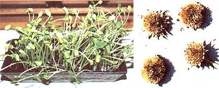
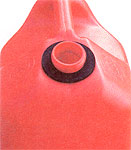

Wild sunflower seeds make delicious sprouts. Harvest the seeds in late fall when the stalks and flower heads are completely dry. Store the seeds in the freezer to help their germination. To sprout, put a layer of potting soil in a shallow container, spread heavily with seeds and cover them with more soil. Keep the soil evenly watered. Harvest by clipping off the sprouts when they are 1 to 3 inches tall. They also can be sprouted in trays without soil but the results aren't as good.
CHARLES LONG
Burlington, Colorado
Sparkling Stove Doors
To clean the inside glass of my woodstove's front door, I wet it with vinegar and rub it down with a paper towel. Any residue is removed with a single-edge razor blade. Easy. It works like a charm.
VINCENT HINCK
Grants Pass, Oregon
A Bright Idea
It seems I am always cringing while trying to remove a burned-out light- bulb from its socket. The thought of the bulb breaking in my hand as I'm trying to un screw it from the socket, which has happened to me on more than one occasion, is not a very pretty picture in my mind. At last, I figured out a solution to my problem. Now, before I put a new light bulb in, I take a dry bar of soap and rub a little on the threads of the bulb. It screws in easily and when it comes time to re place it, it screws out with ease. No more "shattered" thoughts for this homesteader.
MICHELLE FRESHOUR
Elsie, Michigan
Spray-Away Static
This past winter I learned that liquid fabric softener, diluted in a spray bottle, works to reduce the annoying problem of static electricity from dry heat. Just lightly spray the fabric softener on your carpet, especially if you have a computer or other electronic devices, and the static electricity is gone. I do suggest testing the solution on a small spot to make sure it does not stain your carpet or furniture.
AMBER GREYSAY
Keystone, South Dakota
Beat the Bots
The botfly lays its eggs on the inside of a horse's front legs, below the knee and above the hoof. If not removed, the eggs are eventually ingested as the horse nuzzles its legs and can cause problems, even death, if the horse isn't given a wormer that kills bots. There is a special comb made to remove the bot eggs, but combing is time-consuming. Instead, I put either baby oil or petroleum jelly on the eggs, which prevents them from hatching. I noticed a couple of years ago that when I put baby oil on the bot eggs there`would be no new eggs for a day or two. Now during bot season, I put baby oil on my horses daily, from their knees to their hooves. I have found that the botfly will not lay its eggs in the oil. Only a few drops on each leg saves hours of extra grooming time needed to remove the eggs with a comb.
MARCELLA WHITE
Edmonton, Kentucky Great Gaskets
Great Gaskets
The screw-on spouts for metal and plastic gas cans often don't seal tightly, allowing gasoline to leak at the fitting and dribble down the can when fueling mowers and equipment. This not only wastes increasingly expensive gasoline, it also exposes you to the fuel's toxic properties. To stop leakage, use an oversize rubber gasket matching the diameter of the can's spout, and seat the gasket directly on the can so the spout screws down snugly against it. These gaskets are very inexpensive and available from the plumbing section of hardware stores. In addition to discouraging needless spills and evaporation, a tighter seal helps prevent stored fuel from releasing hazardous fumes.
DENNIS DIVINE
Joplin, Missouri
Removing Shrubs
In my landscaping business I remove unwanted shrubs and small trees with my truck and a logging chain or tow cable. One end of the chain hooks on the tow bar in the bumper and the other wraps around the shrub or tree. Two or three tugs in four-wheel drive and the woody offender pops out by its roots.
When you're using your truck for removing shrubs or small trees, use a long cable to stay on the pavement where possible. Cut down parts of the plant that will get in your way or something, but leave 6 feet of height on the trunk, if available, for leverage. Make sure to leave some branch stubs, too, so that the chain doesn't slip off. Plan for safety first. To avoid whiplash, use a heavy, steel, hooked cable or a logging chain. Run the chain hook across and not into the link, so the hook doesn't damage the link. The area of demolition should be completely blocked off and free of pets, people and cars. A cable stretched across a road may not be visible to an oncoming car. Make sure the hook is attached to the part of the vehicle designed for pulling. My truck has a bar in the bumper that is attached to the frame to hold tow knobs. Ordinary bumpers are quite easy to rip off with an anchored chain. Choose your battles and fight from high on the trunk. I've yo-yo'd off the bases of a number of sturdy old yews, and it probably didn't do my truck any good. But big, tall arborvitae, e en old ones, come down like dry corn stalks if the chain is positioned 5 feet up the trunk. Once the dirt ball's out, stop pulling. There's no need to drag 200 pounds of dirt across your lawn. Knock the dirt out of the roots and rake it back into the hole. Finally, cut the shrub or tree into manageable pieces and haul them to the com post dump. May the plant rot in pieces!
DAVID GRIFFIN
Minneapolis, Minnesota
Share Your Wisdom! Earn Some Cash!
Please share your wise-living tips with our readers. We'll pay $25 to $50 for each letter we publish. Send info, with photos if possible, to Country Lore at Mother Earth News; 1503 SW 42nd St.; Topeka, KS 66609-1265.
- MOTHER
|
 Charles Long (2) |
 Dennis Divine |
|